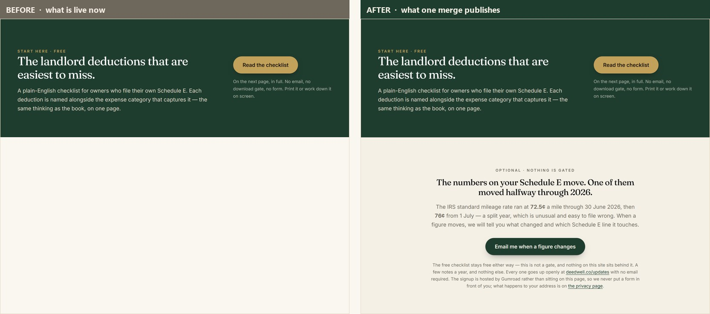
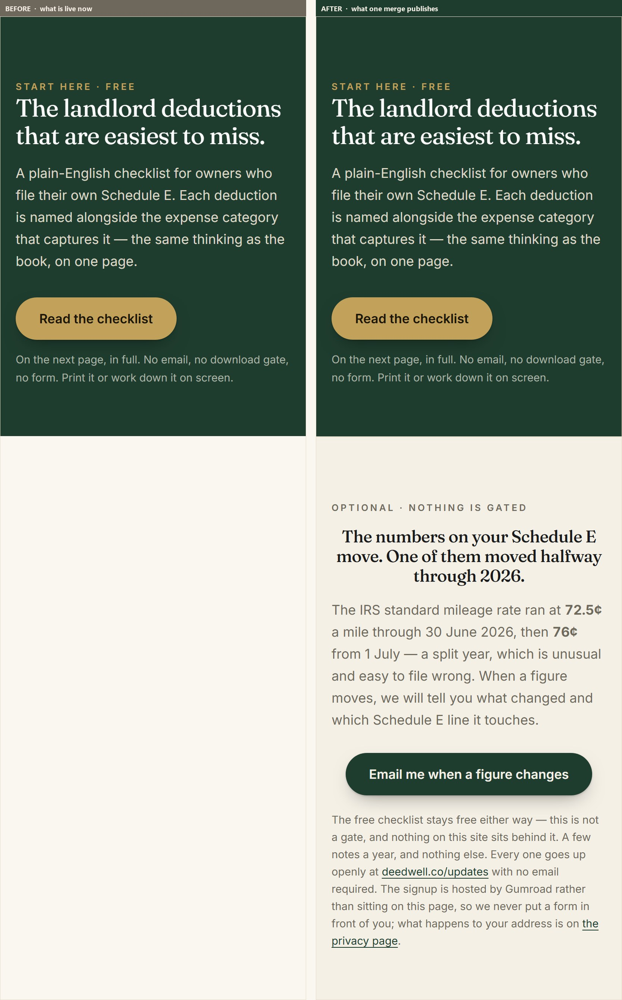
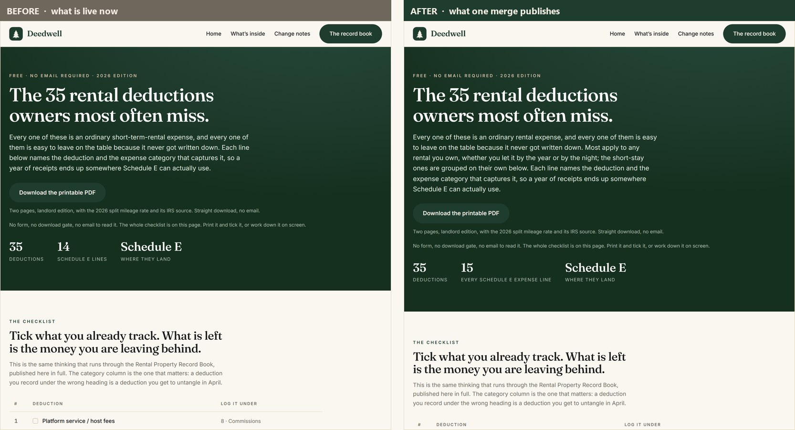
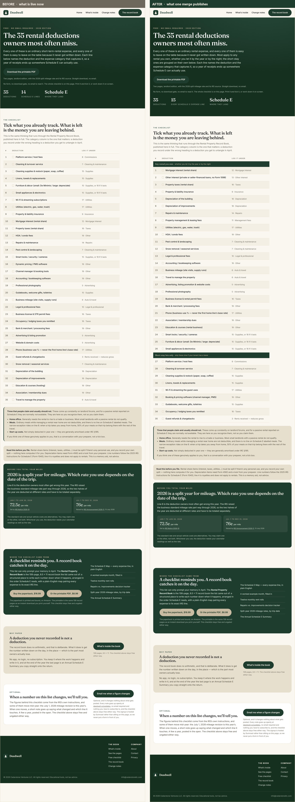
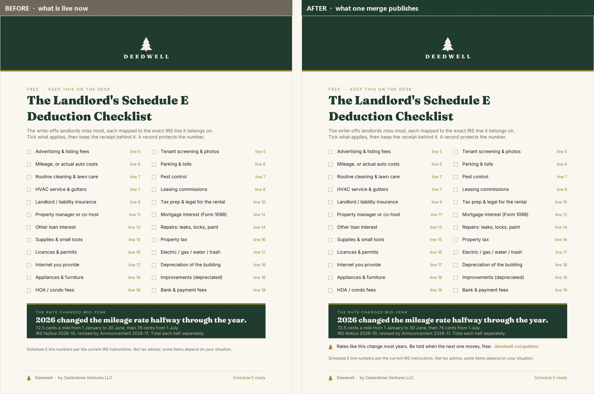

Cedarstone Ventures LLC · internal · not indexed, not linked
Three changes have been waiting on one look from you. They are the same decision, so they are now one branch and one merge. Nothing below is live. Every picture on this page was rendered from the two actual git trees a few seconds before it was written — left is exactly what a stranger sees on deedwell.co right now, right is exactly what they would see after the merge.
BEFORE = main @ dd4caeb · AFTER = feat/top-of-funnel @ fa18675
· rendered 2026-07-28 15:16 UTC
If either branch has moved since, this page is stale and says so:
python tools/render_decision_page.py --check
Yes publishes all three at once. No, or no answer, keeps the site exactly as it is — nothing here can go live by itself.
This is the last thing standing between us and the first outbound act this company has ever made: five landlord trade associations, written and address-verified, offering the free checklist as a member benefit. Sending that mail before this merges would spend our one first impression on tens of thousands of landlords, hand them a PDF with no way back to us, and land them on a page whose first sentence tells them it is for somebody else. That is the whole reason the send is gated behind your look rather than the other way round.
Cost if it is wrong: three pages of copy, revertible with one command, no money and no account involved. Cost of it not being seen: the send stays parked.
Four of our six live Pinterest pins send people to this page, and in the whole history of this repository it has never carried an email ask - not once. The band below is deliberately the quietest thing on the page: it sits after the free checklist, never in front of it, so it reads as an optional follow-on to a gift rather than a toll gate. Cedar button, not gold; gold stays reserved for buy-the-book and take-the-checklist. No form and no new account: the list is hosted by Gumroad, our own storefront.

Most Pinterest traffic is a phone. Centred text stops being comfortable past about three lines and this copy runs to nine on a narrow screen, so the two long blocks go left-aligned under 720px while the heading and button stay centred. Judged from this render, not from the markup.

The live page opens “every one of these is an ordinary short-term-rental expense” and leads with costs only an Airbnb host pays. That sentence was written on 22 July, three days before the Deedwell pivot, and twelve later commits missed it because a rebrand sweep hunts old brand names and this defect never used one. We are about to offer this exact page to five rental-housing associations as a member benefit.

Twenty-six lines that apply to any rental first - led by mortgage interest, taxes, insurance, depreciation and management fees - then nine that only a short stay incurs, under “skip these nine if your tenant has a lease.” The count stays at 35 because that number is printed inside a live pin image and a published pin cannot be edited; two overlapping pairs were merged and the freed slots went to Schedule E lines 11 and 13, the two an Airbnb host never pays. Coverage goes from 13 of 15 expense lines to 15 of 15. No tax wording was touched.

The checklist we give away carried exactly one URL and it was a product page. Somebody prints it, keeps it, and has no way back to us that is not a shop. One line now sits under the mileage note - the rate genuinely does change most years, which is the honest reason to want to be told.
